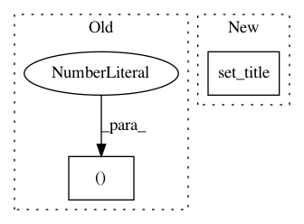

153f6e0ff5729fc22b68d5f6e0fd05edf96d8c2c,examples/datasets/plot_make_imbalance.py,,,#,36
Before Change
axs = [a for ax in axs for a in ax]
axs[0].scatter(X[y == 0, 0], X[y == 0, 1], label="Class /ǖ", alpha=0.5)
axs[0].scatter(X[y == 1, 0], X[y == 1, 1], label="Class /Ǘ", alpha=0.5)
axs[0].set_title("Original set")
plot_decoration(axs[0])
After Change
x="feature 1", y="feature 2", c=y_, ax=ax, colormap="viridis",
colorbar=False
)
ax.set_title("Sampling ratio = {}".format(multiplier))
plt.tight_layout()
plt.show()
In pattern: SUPERPATTERN
Frequency: 3
Non-data size: 2
Instances
Project Name: scikit-learn-contrib/imbalanced-learn
Commit Name: 153f6e0ff5729fc22b68d5f6e0fd05edf96d8c2c
Time: 2019-11-17
Author: g.lemaitre58@gmail.com
File Name: examples/datasets/plot_make_imbalance.py
Class Name:
Method Name:
Project Name: kundajelab/dragonn
Commit Name: 2e19f878707e04da7d9a4ccbe0cceb515b433124
Time: 2019-04-30
Author: annashcherbina@gmail.com
File Name: dragonn/vis/__init__.py
Class Name:
Method Name: plot_ism
Project Name: neurodsp-tools/neurodsp
Commit Name: 5196910e726c04648f5cffae5f50ecd3171539ce
Time: 2019-03-17
Author: tdonoghue@ucsd.edu
File Name: neurodsp/plts/filt.py
Class Name:
Method Name: plot_frequency_response